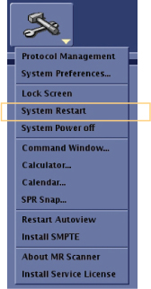

Start Guided Install as root and software setup
Prerequisites
1 Invoke Guided Install as root
Procedure
- When you power up the host computer and see the welcome login
screen, log in with the user name: root and password: operator.
Figure 1. Welcome Login screen

- Logging in as the root user automatically
displays the Linux desktop and launches the Guided Install Starter
window. Click Yes to invoke the Guided Install. note: In case No is selected at the starter menu, select Start Guided Install by right-clicking on the Linux desktop.
- Insert the service key.
2 Check off software setup items
Procedure
- At Software Setup section, complete and check off each item individually.
- Load latest service pack (if any): Installing Software Updates
- Operator documentation loaded: Loading Operator Documentation
3 Hardware configure
- Magnet serial number
- Governing body
- Table encoder calibration value
- This function also displays information related to safety manual details for gradient slew rate and peak spatial gradient strengths. About MR Scanner displays values recommended by International Electrotechnical Commission (IEC) standards. This procedure is to confirm that the scanner information from the About MR Scanner function is correct. The hardware configuration values determine what safety information to show that is related specifically to the site system. Safety data will not be displayed until this procedure has been completed. If any of the configurations are later modified, the safety data will no longer be displayed until this procedure is repeated. This feature does not impact functionality of any other subsystem.
Procedure
- Verify the magnet rating plate serial number physically located on the scanner.
- On the left sidebar, select .
- If the serial numbers match, another message window displays with magnet hardware and software configurations. Manually check and verify that the scanner pictured and information matches the site system. Click Close.
- A message displays requesting confirmation that the magnet configuration is correct. Click Yes if all the details are correct, or click No if the information is incorrect. If the scanner pictured or the scanner information does not match, modify configuration values from the Guided Install menu.
- The ICW status window displays whether or not the About MR Scanner
information matched the configuration values of the MR system.
- If the About MR Scanner values matched, the status window displays: About MR Scanner: Successfully Completed.
- If the About MR Scanner values did not match, the status window displays: About MR Scanner: The selected tool has failed, Please re-run the tool. The ICW calibration is incomplete and the system details must be corrected through Guided Install.
- If any changes were made to Guided Install during this procedure, do a SaveInfo.
4 Option installation
Procedure
- In the Guided Install, select the Option Keys tab in Guided Install.
- Complete Option Installation.
- Load all applicable options. As part of the option load, go to Guided Install > Option Key screen, and click Install Scantool in the Scantool Option Key Installation section.
Figure 2. Install Scantool button

5 Load MR Service software
Procedure
- Insert the MR Service DVD .
- Load the proprietary software. note: For PX26.1 system, use the methods described as DV25.1 and later and DV26.0 and later in the linked procedure.
6 Restart host PC
Procedure
- From the header area of the screen, click the Tools icon arrow and select System Restart, and click Yes to confirm the restart.
Figure 3. Tools tab System Restart

- Login as root and star ICW. Refer to Invoke ICW as Root, check off Mech Inst, Power On, Software Setup, and About MR Scanner.
note: Restarting the host PC shuts down the system safely, and automatically starts the system up again. Restarts are required to finalize changes or updates.